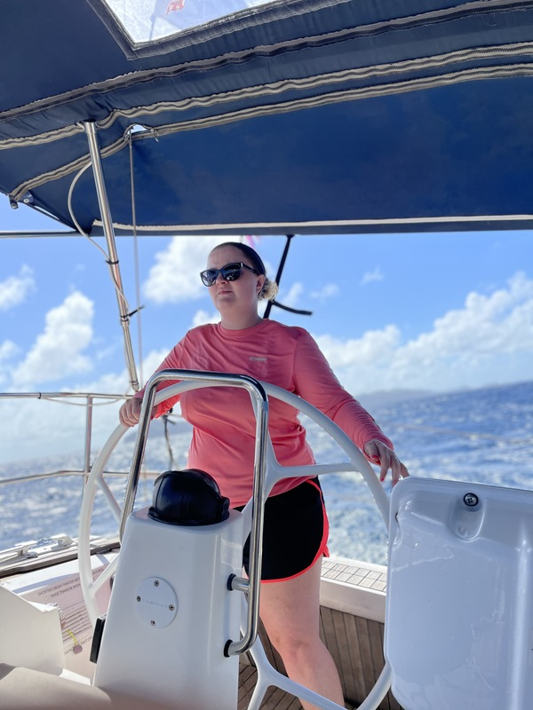
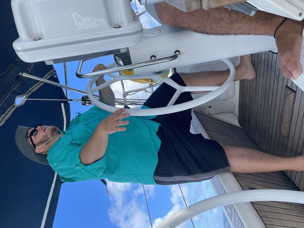
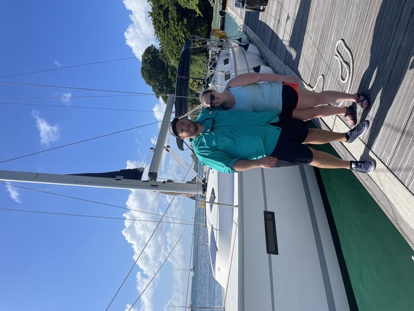
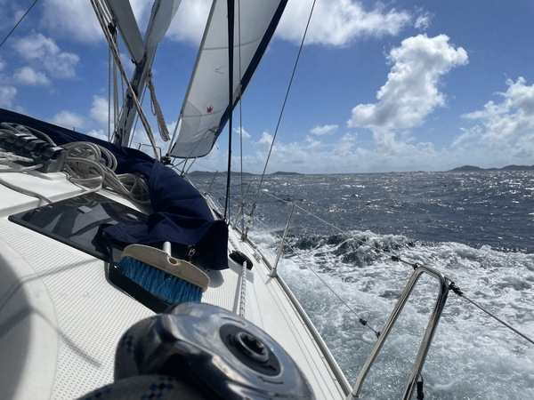
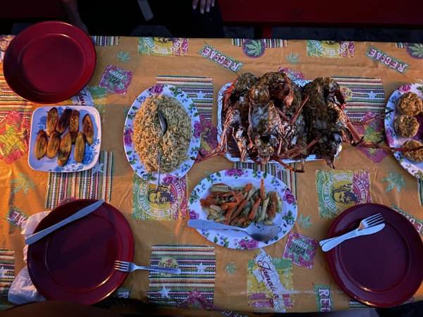
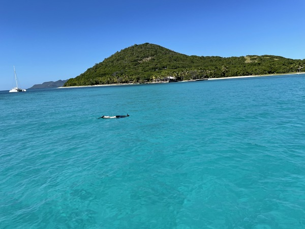
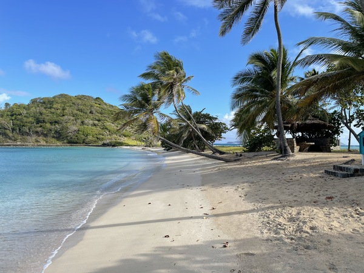

Gallery

Alex at the helm surfing down swells between Bequia and St. Vincent.

Matt at the helm heeled over in 25 knot gusts. If you think you need to reef and you don't already have one in, it's too late.

Matt and Alex infront of sailing vessel Transitions, a 40 foot Bavaria.

St. Vincent provides challenging and fun sailing grounds. The trade winds are consistant and sporty, take an early reef or get the toe rail in the water.

The snorkeling at Tabago Cays is world class, but you have to stop in and see Romeo for one of his famous Lobster dinners.

Some anchorages even have a floating bar. Just tie off the dinghy and enjoy. One of our favorites is Bar One just off of Bequia's Princess Margaret beach.

Petit St. Vincent has a beautiful protected anchorage and some great snorkeling on its barrier reef. There is also a boutique resort with a great restaurant and beach bar if thats more you speed.

Mayreau is a very sought after anchorage, and it's easy to see why with its calm waters and picture perfect beaches.